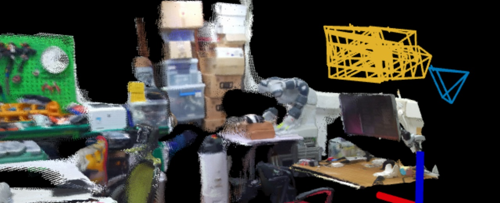
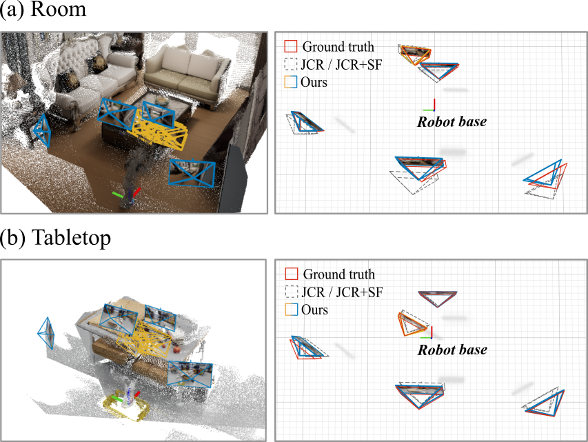
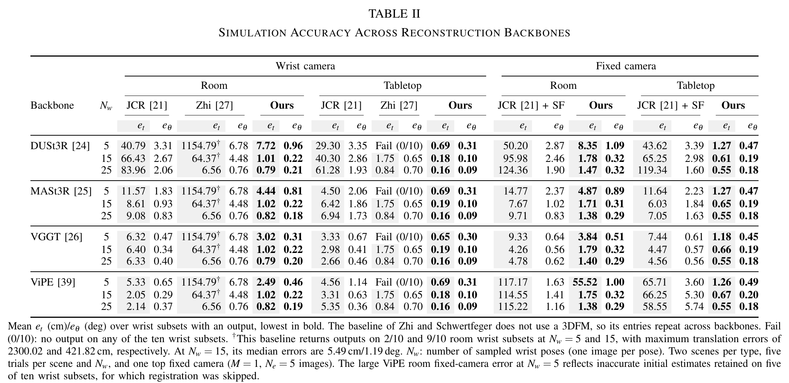
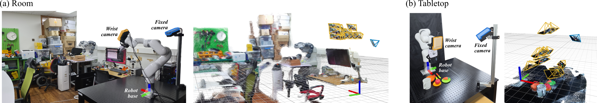
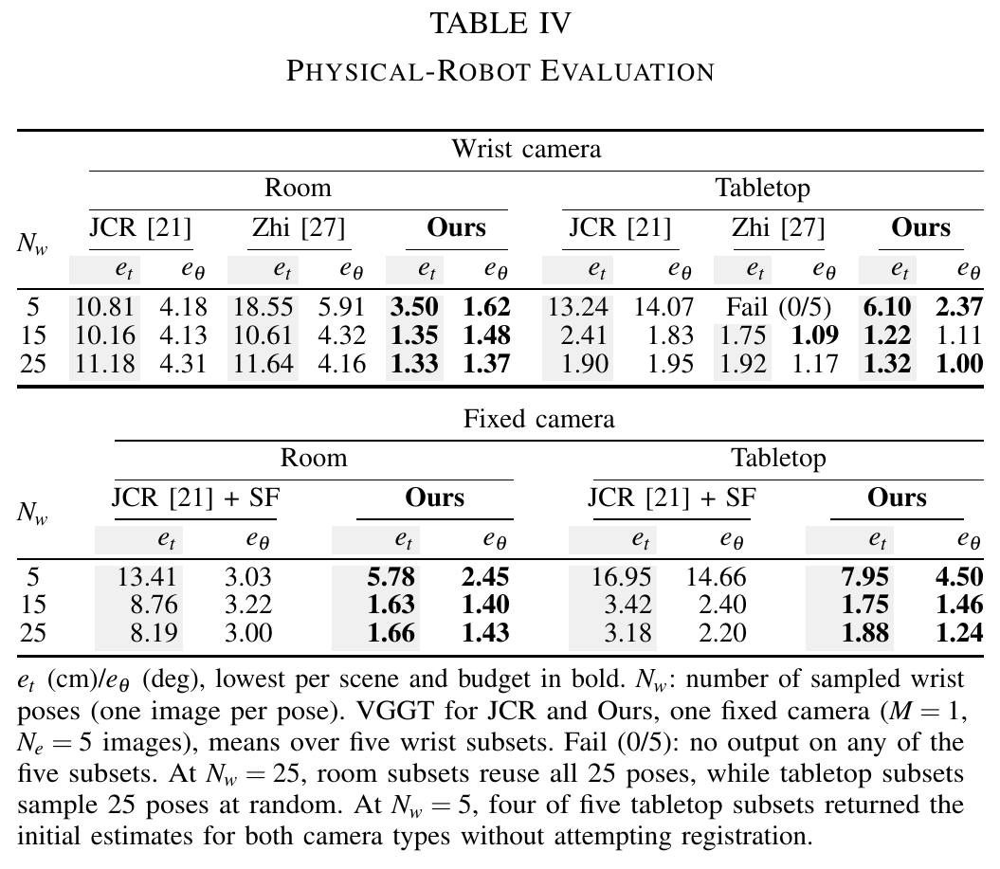

AnchorHEC: Targetless Hand-Eye Calibration
of Wrist and Fixed Cameras
Abstract
Recent robot systems combine wrist and fixed cameras, requiring camera-to-robot transforms for both. Most hand-eye calibration methods rely on targets or robot-body observations. Scene-based methods using 3D reconstruction require neither but address only wrist cameras. We introduce AnchorHEC, a targetless hand-eye calibration framework for wrist and fixed cameras in a single procedure using RGB images, forward kinematics (FK), and known camera intrinsics. We initialize both camera types using FK and a shared 3D foundation model reconstruction. FK-constrained wrist-image bundle adjustment reduces the impact of reconstructed pose and scale errors. If this refinement fails or retains too few inliers, we relax the constraints on potentially inaccurate FK poses and lens parameters. We use the refined wrist transform and FK to triangulate metric points and estimate fixed-camera poses. Across three backbones, calibration errors in simulation decrease by 86.4% in translation and 71.6% in rotation, averaged over both camera types, relative to reconstruction-based baselines. We also validate AnchorHEC on a physical robot.
Video
1:54 · English captions embedded · No audio
Introductory footage is excerpted and arranged from DROID (Khazatsky et al., RSS 2024), under CC BY 4.0.
Interactive 3D Results
Choose an input image to locate its camera. Switch between the raw reconstruction and AnchorHEC to compare camera poses.

Select an input image to highlight its camera in 3D.
Drag to rotate · Right-drag to pan · Scroll or pinch to zoom
Method
Three stages connect scene geometry with robot kinematics.
Initialize in a shared frame
Jointly reconstruct wrist and fixed-camera images. Use wrist motion and FK to estimate the wrist transform, metric scale, and robot-base alignment.
Shared reconstruction → initial transforms
Refine the wrist transform
Combine FK-guided pair selection with image-based bundle adjustment. Allow FK and lens corrections when fixed-constraint refinement fails or retains too few inliers.
Wrist images + FK → refined wrist transform
Register fixed cameras
Triangulate metric points from the refined wrist transform and FK. Use dense correspondences and pose estimation to register each fixed camera.
Metric scene geometry → fixed-camera poses
The wrist camera is calibrated to the end effector, and fixed cameras are calibrated to the robot base. Fixed-camera images are optional for wrist calibration. The method requires known intrinsics, rigid camera mounts, shared observations of a textured stationary scene, and wrist rotations about non-parallel axes.
Experimental Results
Across 3D Foundation model backbones(DUSt3R, MASt3R, and VGGT), AnchorHEC reduces simulation calibration error by 86.4% in translation and 71.6% in rotation relative to JCR for wrist cameras and JCR + SF for fixed cameras.


Physical-Robot Experiments
We evaluate AnchorHEC on two xArm6 acquisitions, room and tabletop, each with one wrist camera and one fixed camera. Reference transforms come from separate target-based calibration. Repeated subsets reuse these acquisitions.


BibTeX
@misc{anchorhec2026,
title = {AnchorHEC: Targetless Hand-Eye Calibration of Wrist and Fixed Cameras},
author = {Guebin Hwang and Taeyeop Lee and Yeonseo Lee and Hyosup Shin and Sungho Jo},
year = {2026},
eprint = {2611.02884},
archivePrefix = {arXiv},
url = {https://arxiv.org/abs/2611.02884}
}